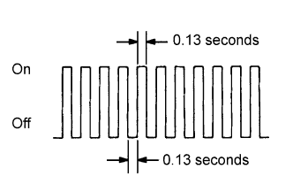

SFI SYSTEM > CHECK MODE PROCEDURE |
| CHECK MODE PROCEDURE |
Check that the following conditions are met:
Battery positive voltage 11 V or higher.
Throttle valve fully closed.
Shift lever in P or N.
A/C switch off.
Turn the engine switch off.
Connect the intelligent tester to the DLC3.
Turn the engine switch on (IG).
Turn the tester on.
Enter the following menus: Powertrain / Engine and ECT / Utility / Check Mode.
Switch the ECM from normal mode to check mode.
|  |
Make sure the MIL flashes as shown in the illustration.
Start the engine.
Make sure the MIL turns off.
Simulate the conditions of the malfunction described by the customer.
Check DTCs and freeze frame data using the tester.